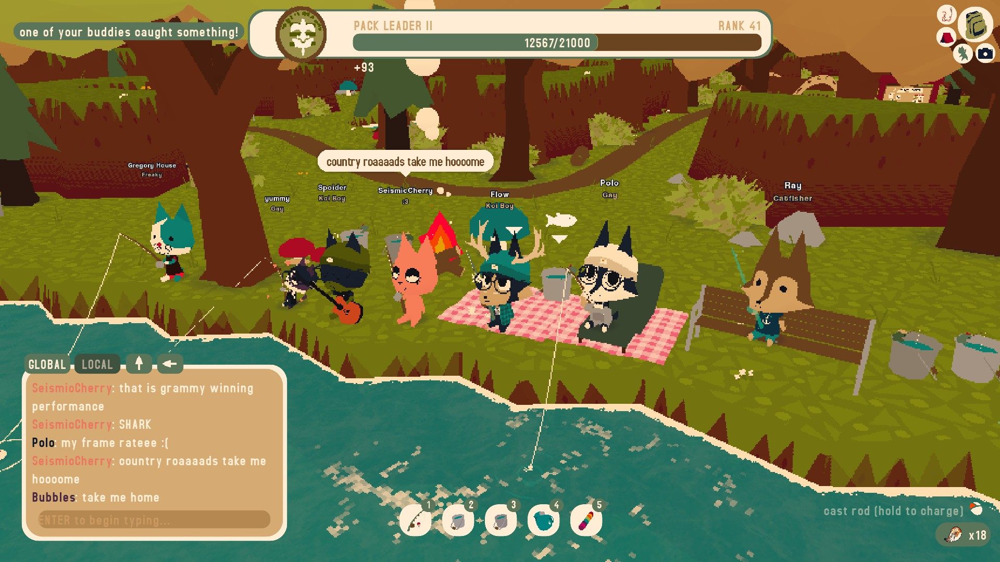
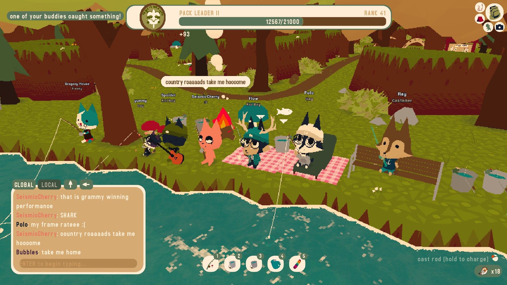

webfishing
2024 November 22webfishing
i've been playing a new game recently called webfishing! it's basically just a chatroom with a fishing minigame, and considering fishing minigames are the peak of games it's a genius idea.

the objective of the game is to fish..... then u sell those fish and earn money to buy upgrades so u can fish bigger and better fish and get more money and more upgrades. it's a fun gameplay loop albeit short. i think i got all the upgrades before i caught every fish. people in the game a very friendly and pretty funny and u kinda just chill with people. i like to play at night to just chill with music
there's three types of fish, freshwater, saltwater, and misc. freshwater is for rivers and ponds, saltwater is for oceans, and misc for fish with unique conditions. there's also events like rain and ufos, and there's a special void location with a unique fish, so u always have a reason to not stay at the same spot.
theres 32 fish for saltwater and freshwater, and 14 for misc. so i've been trying to catch all of the fish and so far i've caught every fish in different qualities and in normal quality!
this is my guy. he used to be blue but i didnt know what to do with the clothes so i changed him to a navy black and used blue clothes. also i didnt want to look like a fursona. shirt is whatever i just change it occasionally. i also got antlers and glasses. i dont wear glasses irl and im not a deer i just think it looks nice. i also got gold and silver particles and a big fluffly tail :3, and im using the rod for getting all normals
anyway this game is really fun despite how simple it is. i wish it got nominated for something but i understand why it didn't. here's some screenshots i took

 



these guys were so cool. i've seen people play songs on the guitar but these guys played at the same time! i've actually seen them twice now first time was at the dock but i didn't take a screenie.
anyway that's all for now. i'll keep playing until i complete my journal which is gonna take legit 2 years cause gold fish are so damn rare and the golden lure does nothing and it uses 3 lure per throw even though it only increases the chANCE BY 0.03%. anyway u can buy the game here. also my steam username is flowtyle if u wanna add me and play or smth.